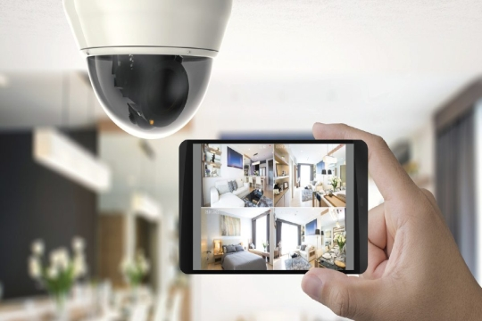
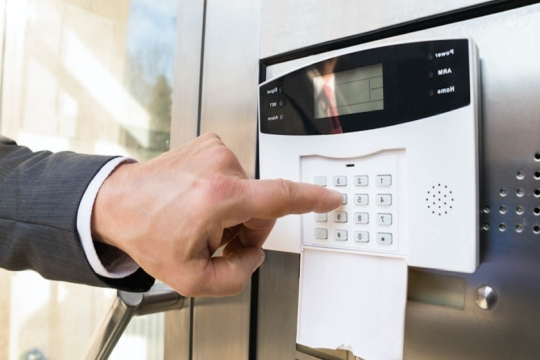
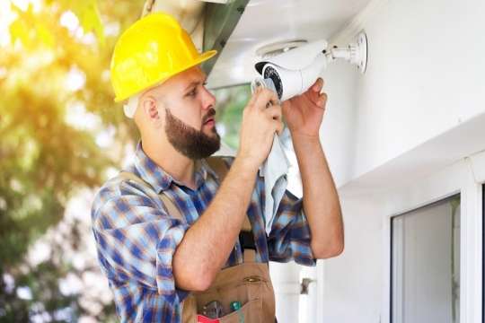

Surveillance cameras
Ofek systems offers world-class security camera systems installed by professional security camera system installers. We have years of experience in planning, customizing and installing comprehensive CCTV systems. We offer video surveillance systems, indoor and outdoor camera systems and cutting-edge video analytics. We specialize in the design and installation of security camera systems for homes, businesses, companies and institutions.

Alarm systems
Your home / business contains people and assets that you want to protect. Installing an alarm system helps you keep out burglars, reduce employee theft, stop unauthorized access, cut insurance costs and prevent theft. Our professional alarm system installers have years of experience in designing, customizing and installing burglar alarms. As a leading commercial alarm company, Safe and Sound Security designs and installs alarm systems for homes, stores, cannabis businesses, industrial facilities, warehouses, apartment complexes, general contractors, commercial buildings, retail establishments and technology companies.
Network installation
ofek systems provides speedy and reliable connection for maximum business security. We ensure your commercial security system is strong, connected, and communicative with top-notch cabling services. Whether your property is an office building, industrial facility, apartment complex, or any other commercial area, we have the tools to handle your project.
Access control installers
Ofek Systems provides effective and simple-to-use door access control systems. We offer over a decade of experience in the design, customization and installation of wired and wireless key card access systems. As access control installers, we understand the importance of controlling who enters and exits your building. We specialize in designing door access control systems for cannabis operations, offices, stores, homes, industrial facilities, warehouses, apartment complexes, general contractors, commercial buildings, retail establishments and technology companies.

Audio / Video installations
We are industry-leading specialists in the design, supply, and installation of professional audio and video systems for commercial premises, restaurants, bars, places of worship, schools, and home use. We have a large range of pre-configured off-the-shelf installation packages to suit most requirements, along with our ever-expanding catalog, which covers everything from modern 'smart home' equipment to high-powered PA systems for events and large venues. Our team is always on hand to guide you in creating an audio system to suit your specific needs, whether you require a discreet home system or a large multi-zone commercial system, we will work with you to create a bespoke package.
Finance And Legal Working
Streams Occur Throughout
Far far away, behind the word mountains, far from the countries Vokalia and Consonantia, there live the blind texts.